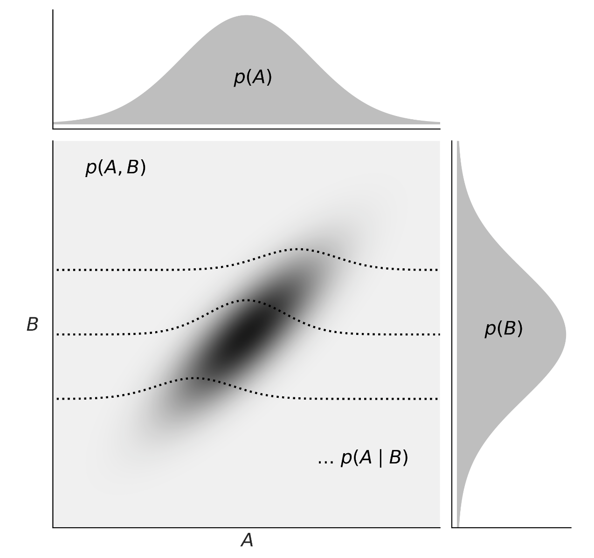

here::here("code", "_common.R") |>
source()
# Load packages
if (!requireNamespace("pacman")) install.packages("pacman")
pacman::p_load(mice)32 Probabilità congiunta
Prerequisiti
- Leggere il capitolo Sampling Distributions of Estimators (Schervish & DeGroot, 2014).
Concetti e Competenze Chiave
- Comprendere la probabilità che due o più eventi si verifichino contemporaneamente.
- Definire e calcolare la funzione di probabilità congiunta per variabili casuali discrete.
- Verificare le proprietà fondamentali delle distribuzioni di probabilità congiunta.
- Determinare la probabilità di eventi definiti in termini di variabili aleatorie.
- Derivare e interpretare le distribuzioni marginali da una distribuzione congiunta.
- Formalizzare l’indipendenza tra variabili casuali e calcolare la loro distribuzione congiunta.
- Definire e calcolare la covarianza per quantificare la relazione lineare tra due variabili casuali.
- Utilizzare la correlazione per misurare l’intensità della relazione lineare tra variabili casuali, indipendentemente dalle loro unità di misura.
- Comprendere le proprietà chiave della covarianza e della correlazione, inclusa l’incorrelazione.
- Estendere i concetti di probabilità congiunta, marginale e condizionale alle variabili continue, utilizzando gli integrali.
Preparazione del Notebook
32.1 Introduzione
In questo capitolo ci proponiamo di analizzare in dettaglio il concetto di probabilità congiunta, focalizzando l’attenzione sul caso di variabili aleatorie discrete. La probabilità congiunta rappresenta la misura della probabilità che due o più eventi si verifichino simultaneamente.
32.2 Funzione di Probabilità Congiunta
Finora abbiamo analizzato la probabilità associata a un singolo evento, o più precisamente, a un singolo valore assunto da una variabile aleatoria. Tuttavia, spesso siamo interessati a studiare la relazione tra due o più eventi. La funzione di probabilità congiunta ci permette di estendere il concetto di probabilità al caso di più variabili aleatorie, descrivendo la probabilità che queste assumano specifici valori contemporaneamente.
32.2.1 Esempio: Lancio di Tre Monete Equilibrate
Per comprendere meglio il concetto di probabilità congiunta, immaginiamo di lanciare tre monete. Tutti i possibili risultati di questo esperimento (ad esempio, tre teste, due teste e una croce, ecc.) costituiscono quello che chiamiamo spazio campionario. In questo caso, lo spazio campionario \(\Omega\) è dato da:
\[ \Omega = \{TTT, TTC, TCT, CTT, CCT, CTC, TCC, CCC\}, \]
dove \(T\) indica “testa” e \(C\) indica “croce”. Assumendo che ogni lancio sia indipendente dagli altri, ogni risultato nello spazio campionario \(\Omega\) ha la stessa probabilità di verificarsi, ovvero \(1/8\).
Definiamo ora le seguenti variabili casuali sullo spazio campionario \(\Omega\):
- \(X \in \{0, 1, 2, 3\}\) rappresenta il numero totale di teste ottenute nei tre lanci.
- \(Y \in \{0, 1\}\) indica se il primo lancio ha dato testa (\(1\)) oppure croce (\(0\)).
La tabella seguente mostra lo spazio campionario con i valori di \(X\) e \(Y\) associati a ciascun esito, insieme alla probabilità di ciascun evento \(\omega\):
| \(\omega\) | \(X\) | \(Y\) | \(P(\omega)\) |
|---|---|---|---|
| \(\omega_1\) = TTT | 3 | 1 | 1/8 |
| \(\omega_2\) = TTC | 2 | 1 | 1/8 |
| \(\omega_3\) = TCT | 2 | 1 | 1/8 |
| \(\omega_4\) = CTT | 2 | 0 | 1/8 |
| \(\omega_5\) = CCT | 1 | 0 | 1/8 |
| \(\omega_6\) = CTC | 1 | 0 | 1/8 |
| \(\omega_7\) = TCC | 1 | 1 | 1/8 |
| \(\omega_8\) = CCC | 0 | 0 | 1/8 |
Ora possiamo determinare la probabilità congiunta per ogni coppia \((X, Y)\), che rappresenta la probabilità di ottenere un determinato numero di teste \(X\) e un determinato risultato per il primo lancio \(Y\). Ad esempio:
\[P(X=0, Y=0) = P(\text{CCC}) = 1/8,\]
e così via per le altre coppie.
Le probabilità congiunte per tutte le possibili combinazioni \((X, Y)\) sono calcolate come segue:
\[ \begin{aligned} P(X = 0, Y = 0) &= 1/8, \\ P(X = 1, Y = 0) &= P(\text{CCT}) + P(\text{CTC}) = 1/4, \\ P(X = 1, Y = 1) &= P(\text{TCC}) = 1/8, \\ P(X = 2, Y = 0) &= P(\text{CTT}) = 1/8, \\ P(X = 2, Y = 1) &= P(\text{TTC}) + P(\text{TCT}) = 1/4, \\ P(X = 3, Y = 1) &= P(\text{TTT}) = 1/8. \end{aligned} \]
Queste probabilità costituiscono la distribuzione di probabilità congiunta delle variabili casuali \(X\) (numero di teste) e \(Y\) (testa al primo lancio). Questa distribuzione fornisce un quadro completo delle probabilità per tutte le combinazioni di risultati di queste due variabili.
32.2.2 Definizione: Funzione di Probabilità Congiunta
La funzione di probabilità congiunta di due variabili casuali \(X\) e \(Y\) associa a ogni coppia \((x, y)\) una probabilità \(P(X = x, Y = y)\).
32.2.3 Proprietà
Una distribuzione di probabilità congiunta deve soddisfare:
- \(0 \leq P(x_i, y_j) \leq 1\) per ogni coppia \((x_i, y_j)\),
- \(\sum_{i} \sum_{j} P(x_i, y_j) = 1\), ovvero la somma delle probabilità su tutte le coppie deve essere 1.
32.2.4 Calcolo della Probabilità di Eventi Specifici
Data la distribuzione di probabilità congiunta, possiamo determinare la probabilità di eventi definiti in termini delle variabili aleatorie \(X\) e \(Y\). Ad esempio, per trovare la probabilità che \(X + Y \leq 1\), sommiamo le probabilità di tutte le coppie \((x, y)\) che soddisfano questa condizione, ottenendo \(P(X+Y \leq 1) = 3/8\).
32.3 Marginalizzazione
Immagina di condurre uno studio sul livello di stress tra studenti universitari, raccogliendo dati su variabili come l’anno di corso, il genere, il supporto sociale e il livello di stress. Se desideri comprendere come il livello di stress varia in funzione dell’anno di corso, indipendentemente dal genere e dal supporto sociale, puoi utilizzare la marginalizzazione.
La marginalizzazione consente di ottenere una distribuzione di probabilità focalizzata su una o più variabili di interesse, “eliminando” dal calcolo le variabili non rilevanti. Nel nostro esempio, per ottenere la distribuzione marginale del livello di stress rispetto all’anno di corso, occorre sommare (o integrare, nel caso di variabili continue) le probabilità associate a tutte le combinazioni di genere e supporto sociale, mantenendo fisso l’anno di corso. In questo modo, otteniamo una distribuzione che descrive come il livello di stress varia solo in relazione all’anno di corso.
Il termine “marginalizzazione” deriva dalle tabelle di contingenza: quando rappresentiamo una distribuzione di probabilità congiunta in una tabella, le probabilità marginali—che descrivono la distribuzione di una variabile indipendentemente dalle altre—si trovano nei margini della tabella (ovvero nelle righe e colonne finali).
32.3.1 Formalizzazione della Marginalizzazione
Data una distribuzione di probabilità congiunta \(P(X, Y)\) di due variabili casuali \(X\) e \(Y\), possiamo ottenere la distribuzione marginale di \(X\) sommando tutte le probabilità associate a \(Y\). Formalmente:
\[ P(X = x) = \sum_y P(X = x, Y = y), \]
dove \(P(X = x, Y = y)\) rappresenta la probabilità congiunta di \(X\) e \(Y\). La marginalizzazione garantisce inoltre che le distribuzioni siano normalizzate, cioè che le somme delle probabilità marginali per ciascuna variabile siano uguali a 1:
\[ \sum_x P(X = x) = 1 \quad \text{e} \quad \sum_y P(Y = y) = 1. \]
Nel caso di variabili continue, questa operazione di somma viene sostituita dall’integrazione.
Per chiarire, consideriamo il seguente esempio. Supponiamo di studiare l’efficacia di una terapia cognitivo-comportamentale per l’ansia, includendo variabili come l’età dei partecipanti e il livello iniziale di ansia. Se vogliamo valutare l’efficacia della terapia a prescindere dall’età e dal livello di ansia iniziale, marginalizziamo rispetto a queste due variabili, ottenendo così una distribuzione che riflette solo l’associazione tra terapia e riduzione dell’ansia.
In sintesi, la marginalizzazione:
- permette di estrarre distribuzioni di probabilità per variabili specifiche, “dimenticando” quelle non rilevanti;
- consiste nel sommare o integrare le probabilità attraverso tutte le possibili combinazioni delle variabili non rilevanti, concentrandosi su quelle di interesse.
In conclusione, la marginalizzazione è uno strumento essenziale per l’analisi statistica, facilitando lo studio delle relazioni tra variabili complesse e aiutandoci a isolare gli effetti delle variabili di interesse in modo rigoroso.
Esempio 32.1 Per fare un esempio, prendiamo come riferimento l’esperimento del lancio di tre monete equilibrate descritto precedentemente. Per calcolare le probabilità marginali di \(X\) e \(Y\), sommiamo le probabilità congiunte su una dimensione. La probabilità marginale di \(X\), \(P_X\), si ottiene sommando le probabilità lungo le colonne per ciascun valore fisso di \(X\); analogamente, la probabilità marginale di \(Y\), \(P_Y\), si calcola sommando le probabilità lungo le righe per ciascun valore fisso di \(Y\).
La tabella seguente mostra la distribuzione di probabilità congiunta \(P(X, Y)\) e le probabilità marginali \(P(X)\) e \(P(Y)\):
| \(x \setminus y\) | 0 | 1 | \(P(x)\) |
|---|---|---|---|
| 0 | 1/8 | 0 | 1/8 |
| 1 | 2/8 | 1/8 | 3/8 |
| 2 | 1/8 | 2/8 | 3/8 |
| 3 | 0 | 1/8 | 1/8 |
| \(P(y)\) | 4/8 | 4/8 | 1.0 |
32.3.2 Marginalizzazione per Variabili Casuali Continue
Nell’ambito della statistica bayesiana, il concetto di marginalizzazione gioca un ruolo cruciale. Un esempio di equazione che emerge da questo processo è:
\[ p(y) = \int_{\theta} p(y, \theta) \, d\theta = \int_{\theta} p(y \mid \theta) p(\theta) \, d\theta, \]
dove \(y\) e \(\theta\) sono variabili casuali continue, con \(y\) che rappresenta i dati osservati e \(\theta\) i parametri di un modello statistico. Questa equazione illustra come, in un contesto continuo, la marginalizzazione possa essere vista come l’estensione dell’approccio discreto a un continuum di valori per le variabili in esame.
32.4 Indipendenza tra Variabili Casuali
L’indipendenza tra variabili casuali è un concetto fondamentale in statistica e probabilità, parallelo all’idea di indipendenza tra eventi. Due variabili casuali si considerano indipendenti quando l’informazione su una non altera in alcun modo la distribuzione di probabilità dell’altra. Questa sezione offre una formalizzazione dell’indipendenza tra due variabili casuali discrete, basata sulla loro distribuzione di probabilità congiunta.
32.4.1 Definizione di Indipendenza
Due variabili casuali \(X\) e \(Y\), con una distribuzione congiunta, sono definite indipendenti se, e solo se, per ogni coppia di valori \((x, y)\) si verifica che:
\[ P_{X, Y}(x, y) = P_X(x) \cdot P_Y(y). \]
In termini pratici, ciò significa che se \(X\) e \(Y\) sono variabili casuali discrete indipendenti, la loro distribuzione di probabilità congiunta è il prodotto delle rispettive distribuzioni di probabilità marginali. Se invece \(P_{X, Y}(x, y) \neq P_X(x) \cdot P_Y(y)\), le variabili non sono indipendenti e si dicono associate o dipendenti.
Questo concetto si applica anche alle variabili casuali continue, mantenendo la stessa logica: l’indipendenza si verifica quando la funzione di densità congiunta è il prodotto delle funzioni di densità marginali.
32.4.2 Associazione tra Variabili Casuali
Quando due variabili casuali non sono indipendenti, si descrivono come associate o dipendenti. In questo contesto, è utile introdurre il concetto di covarianza (e correlazione) come misura del grado di associazione lineare tra due variabili casuali. La covarianza e la correlazione quantificano in che modo la variazione di una variabile è associata alla variazione dell’altra, fornendo un indice della loro interdipendenza lineare.
Riepilogando, l’indipendenza tra variabili casuali è un concetto chiave per comprendere le relazioni tra fenomeni aleatori. Riconoscere se due variabili sono indipendenti o associate è fondamentale per l’analisi statistica e per la modellazione di relazioni causali o di correlazione tra variabili.
32.5 Covarianza
La covarianza è un parametro statistico che quantifica il grado e la direzione della relazione lineare tra due variabili casuali, \(X\) e \(Y\). In termini semplici, misura come le variazioni di una variabile si accompagnano a quelle dell’altra. Per esempio, considerando l’altezza e il peso di giraffe, scopriremmo che queste due misure tendono ad aumentare insieme, evidenziando così una covarianza positiva. La covarianza è denotata come \(Cov(X, Y) = \sigma_{xy}\).
32.5.1 Definizione di Covarianza
La covarianza tra due variabili casuali \(X\) e \(Y\) è definita come:
\[ Cov(X, Y) = \mathbb{E}\left[\left(X - \mathbb{E}[X]\right) \left(Y - \mathbb{E}[Y]\right)\right], \]
dove \(\mathbb{E}[X]\) e \(\mathbb{E}[Y]\) rappresentano i valori attesi (o medie) di \(X\) ed \(Y\), rispettivamente.
In termini più espliciti, la covarianza può essere espressa come:
\[ Cov(X, Y) = \sum_{(x, y) \in \Omega} (x - \mu_X) (y - \mu_Y) f(x, y), \]
dove \(\mu_X\) e \(\mu_Y\) sono le medie di \(X\) ed \(Y\), e \(f(x, y)\) è la funzione di probabilità congiunta delle variabili.
Questa definizione mostra una stretta analogia con la varianza, che è la covarianza di una variabile con se stessa:
\[ \mathbb{V}(X) = Cov(X, X). \]
Inoltre, la covarianza può essere calcolata attraverso la relazione:
\[ Cov(X, Y) = \mathbb{E}(XY) - \mathbb{E}(X)\mathbb{E}(Y). \]
32.5.2 Dimostrazione
La formula alternativa per la covarianza si dimostra come segue:
\[ \begin{align} Cov(X, Y) &= \mathbb{E}\left[\left(X - \mathbb{E}[X]\right) \left(Y - \mathbb{E}[Y]\right)\right]\\ &= \mathbb{E}(XY) - \mathbb{E}(X)\mathbb{E}(Y). \end{align} \]
32.5.3 Esempio di Calcolo della Covarianza
Consideriamo le variabili casuali \(X\) e \(Y\) con medie \(\mu_X = 1.5\) e \(\mu_Y = 0.5\). La covarianza di \(X\) e \(Y\) si calcola come:
\[ Cov(X, Y) = \sum_{(x, y) \in \Omega} (x - \mu_X) (y - \mu_Y) f(x, y) = \frac{1}{4}. \]
Questo risultato si può ottenere anche dalla formula alternativa, calcolando prima \(\mathbb{E}(XY)\):
\[ \mathbb{E}(XY) = 1.0. \]
Allora, la covarianza tra \(X\) e \(Y\) è:
\[ Cov(X, Y) = 1 - 1.5 \cdot 0.5 = 0.25. \]
Esempio 32.2 Per calcolare la covarianza \(Cov(X, Y)\) in R, consideriamo l’esempio in cui \(X\) è il numero totale di teste che si ottiene dal lancio di tre monete equilibrate e \(Y\) è il risultato del primo lancio (testa = 1, croce = 0). Procediamo creando il prodotto cartesiano di tutti i possibili valori di \(X\) e \(Y\).
# Creare il prodotto cartesiano di X (c3) e Y (c1)
c3 <- 0:3 # Numero totale di teste possibili
c1 <- 0:1 # Risultato del primo lancio (0 = croce, 1 = testa)
sample <- expand.grid(c1 = c1, c3 = c3)
sample
#> c1 c3
#> 1 0 0
#> 2 1 0
#> 3 0 1
#> 4 1 1
#> 5 0 2
#> 6 1 2
#> 7 0 3
#> 8 1 3Il primo numero di ogni coppia rappresenta il valore di \(Y\), mentre il secondo rappresenta il valore di \(X\). Tuttavia, queste coppie \((X, Y)\) non hanno tutte la stessa probabilità di verificarsi. La probabilità associata a ciascuna coppia è data dai seguenti valori: \(1/8, 2/8, 1/8, 0, 0, 1/8, 2/8, 1/8\). Questa è la distribuzione di massa di probabilità congiunta delle variabili casuali \(X\) e \(Y\). Applicando la formula per la covarianza:
[ Cov(X, Y) = _{i=1}^n (X_i - E[X])(Y_i - E[Y]) P(X_i, Y_i) ]
Calcoliamo la covarianza in R:
# Probabilità di ogni coppia (X, Y)
pmf <- c(1 / 8, 2 / 8, 1 / 8, 0, 0, 1 / 8, 2 / 8, 1 / 8)
# Calcolo della covarianza
res <- c()
for (i in 1:nrow(sample)) {
res <- c(res, (sample$c1[i] - 0.5) * (sample$c3[i] - 1.5) * pmf[i])
}
# Somma dei prodotti ponderati
covariance <- sum(res)
covariance
#> [1] -0.125La covarianza tra \(X\) e \(Y\) è dunque uguale a \(-0.125\).
32.6 Correlazione
Mentre la covarianza fornisce un’indicazione della tendenza di due variabili casuali a variare insieme, essa è influenzata dalle unità di misura delle variabili, rendendo difficile valutare l’intensità della loro relazione lineare. Per ovviare a questo, si utilizza la correlazione, che normalizza la covarianza attraverso le deviazioni standard delle variabili, offrendo così una misura standardizzata dell’associazione lineare tra di esse.
Definizione 32.1 Il coefficiente di correlazione tra due variabili casuali \(X\) e \(Y\), denotato come \(\rho(X,Y)\) o \(\rho_{X,Y}\), è definito come:
\[ \rho(X,Y) = \frac{Cov(X,Y)}{\sqrt{\mathbb{V}(X)\mathbb{V}(Y)}}, \]
dove \(\mathbb{V}(X)\) e \(\mathbb{V}(Y)\) rappresentano le varianze di \(X\) e \(Y\), rispettivamente.
Il coefficiente di correlazione \(\rho_{xy}\) è un valore adimensionale, ovvero non dipende dalle unità di misura delle variabili, e varia nell’intervallo \(-1 \leq \rho \leq 1\).
32.7 Proprietà
- Covarianza con una Costante: La covarianza tra una variabile aleatoria \(X\) e una costante \(c\) è sempre nulla: \(Cov(c, X) = 0\).
- Simmetria: La covarianza è simmetrica: \(Cov(X,Y) = Cov(Y,X)\).
- Intervallo di Correlazione: Il coefficiente di correlazione \(\rho\) varia tra -1 e 1: \(-1 \leq \rho(X,Y) \leq 1\).
- Indipendenza dalle Unità di Misura: La correlazione è indipendente dalle unità di misura: \(\rho(aX, bY) = \rho(X,Y)\) per ogni \(a, b > 0\).
- Relazione Lineare Perfetta: Se \(Y = a + bX\) è una funzione lineare di \(X\), allora \(\rho(X,Y) = \pm 1\), a seconda del segno di \(b\).
- Covarianza e Costanti: La covarianza tra \(X\) e \(Y\), ciascuna moltiplicata per una costante, è \(Cov(aX, bY) = ab \, Cov(X,Y)\).
- Varianza della Somma/Differenza: \(\mathbb{V}(X \pm Y) = \mathbb{V}(X) + \mathbb{V}(Y) \pm 2Cov(X,Y)\).
- Covarianza e Somma di Variabili: \(Cov(X + Y, Z) = Cov(X,Z) + Cov(Y,Z)\).
- Varianza di una Somma di Variabili Aleatorie: Per variabili aleatorie \(X_1, \dots, X_n\), si ha \(\mathbb{V}(\sum_{i=1}^n X_i) = \sum_{i=1}^n \mathbb{V}(X_i) + 2\sum_{i<j} Cov(X_i, X_j)\).
- Covarianza e Somme di Prodotti: \(Cov(\sum_{i=1}^n a_i X_i, \sum_{j=1}^m b_j Y_j) = \sum_{i=1}^n \sum_{j=1}^m a_i b_j Cov(X_i, Y_j)\).
- Indipendenza e Covarianza di Somme: Se \(X_1, X_2, \dots, X_n\) sono indipendenti, allora \(Cov(\sum_{i=1}^n a_i X_i, \sum_{j=1}^n b_j X_j) = \sum_{i=1}^n a_i b_i \mathbb{V}(X_i)\).
32.7.1 Incorrelazione
Due variabili casuali \(X\) ed \(Y\) si dicono incorrelate, o linearmente indipendenti, se la loro covarianza è nulla:
\[ Cov(X,Y) = \mathbb{E}[(X - \mu_X)(Y - \mu_Y)] = 0, \]
equivalente a dire che \(\rho_{XY} = 0\) e \(\mathbb{E}(XY) = \mathbb{E}(X)\mathbb{E}(Y)\).
Questa condizione indica una forma di indipendenza più debole rispetto all’indipendenza stocastica. Tuttavia, \(Cov(X, Y) = 0\) non implica necessariamente che \(X\) ed \(Y\) siano stocasticamente indipendenti.
Esempio 32.3 Consideriamo una distribuzione di probabilità congiunta di due variabili aleatorie, \(X\) e \(Y\), definita come:
\[ f_{XY}(x,y) = \left\{ \begin{array}{ll} \frac{1}{4} & \text{per } (x,y) \in \{(0,0), (1,1), (1, -1), (2,0) \}, \\ 0 & \text{altrimenti.} \end{array} \right. \]
Questo implica che le variabili aleatorie \(X\) e \(Y\) assumono valori specifici con probabilità uniforme solo per determinate coppie \((x, y)\) e zero in tutti gli altri casi.
Distribuzioni Marginali
La distribuzione marginale di \(X\) si ottiene sommando le probabilità congiunte su tutti i possibili valori di \(Y\), e viceversa per \(Y\). Le distribuzioni marginali risultano essere:
-
Per \(X\):
\[ f_X(x) = \left\{ \begin{array}{ll} \frac{1}{4} & \text{per } x=0, \\ \frac{1}{2} & \text{per } x=1, \\ \frac{1}{4} & \text{per } x=2. \end{array} \right. \]
-
Per \(Y\):
\[ f_Y(y) = \left\{ \begin{array}{ll} \frac{1}{4} & \text{per } y=-1, \\ \frac{1}{2} & \text{per } y=0, \\ \frac{1}{4} & \text{per } y=1. \end{array} \right. \]
Medie e Varianze
Calcoliamo ora le medie e le varianze di \(X\) e \(Y\):
-
Media di \(X\):
\[ \mathbb{E}(X) = 0 \cdot \frac{1}{4} + 1 \cdot \frac{1}{2} + 2 \cdot \frac{1}{4} = 1. \]
-
Varianza di \(X\):
\[ \mathbb{V}(X) = \left(0^2 \cdot \frac{1}{4} + 1^2 \cdot \frac{1}{2} + 2^2 \cdot \frac{1}{4}\right) - \mathbb{E}(X)^2 = \frac{3}{2} - 1 = \frac{1}{2}. \]
-
Media di \(Y\):
\[ \mathbb{E}(Y) = (-1) \cdot \frac{1}{4} + 0 \cdot \frac{1}{2} + 1 \cdot \frac{1}{4} = 0. \]
-
Varianza di \(Y\):
\[ \mathbb{V}(Y) = \left((-1)^2 \cdot \frac{1}{4} + 0^2 \cdot \frac{1}{2} + 1^2 \cdot \frac{1}{4}\right) - \mathbb{E}(Y)^2 = \frac{1}{2}. \]
Covarianza tra X e Y
La covarianza si calcola come:
\[ Cov(X,Y) = \mathbb{E}(XY) - \mathbb{E}(X)\mathbb{E}(Y), \]
dove \(\mathbb{E}(XY)\) si trova sommando il prodotto delle coppie di valori \((x, y)\) per la loro probabilità congiunta:
\[ \mathbb{E}(XY) = 0. \]
Di conseguenza, la covarianza tra \(X\) e \(Y\) è zero:
\[ Cov(X,Y) = 0 - 1 \cdot 0 = 0. \]
Conclusioni
Sebbene \(X\) e \(Y\) siano incorrelate (covarianza nulla), ciò non implica la loro indipendenza. L’indipendenza richiede che la funzione di probabilità congiunta si possa esprimere come il prodotto delle funzioni di probabilità marginali per ogni \(x\) e \(y\), condizione che non si verifica in questo caso. Quindi, nonostante l’assenza di correlazione, \(X\) e \(Y\) non sono indipendenti, dimostrando che l’incorrelazione non garantisce l’indipendenza.
32.8 Variabili continue
Consideriamo ora le distribuzioni di densità. Nella figura successiva, tratta da Martin (2024), vediamo una rappresentazione della relazione tra la probabilità congiunta \(p(A,B)\), le probabilità marginali \(p(A)\) e \(p(B)\), e le probabilità condizionali \(p(A \mid B)\).

Probabilità congiunta \(p(A,B)\): rappresenta la probabilità che A e B assumano certi valori contemporaneamente. Per le variabili continue, questa è data dall’integrazione della funzione di densità congiunta su un’area o volume di interesse.
Probabilità marginale \(p(A)\) e \(p(B)\): è la probabilità di osservare un particolare valore di A (o B) indipendentemente dal valore di B (o A). Si ottiene integrando la funzione di densità congiunta sull’intero intervallo di valori dell’altra variabile.
Probabilità condizionale \(p(A \mid B)\): esprime la probabilità di A dato B. Si calcola dividendo la probabilità congiunta per la probabilità marginale di B, applicando la definizione di probabilità condizionale anche nel contesto continuo.
La transizione dal trattamento delle variabili discrete a quello delle variabili continue richiede un cambiamento di strumenti matematici da somme ad integrali, ma i concetti fondamentali di probabilità congiunta, marginale e condizionale rimangono applicabili.
32.9 Riflessioni Conclusive
In alcune situazioni, ogni singolo elemento di una popolazione può essere associato a diverse variabili casuali. Ad esempio, consideriamo l’elenco di tutti gli studenti iscritti a un’università e immaginiamo di selezionare uno studente a caso per misurare la sua altezza e il suo peso. In questo caso, ogni individuo della popolazione è associato a due variabili casuali, l’altezza e il peso. Quando si hanno due o più variabili casuali associate ad ogni elemento di una popolazione, è possibile studiare la distribuzione congiunta di tali variabili casuali. In questo capitolo abbiamo esaminato come rappresentare la distribuzione di massa di probabilità congiunta di due variabili casuali discrete e come ottenere le distribuzioni marginali delle due variabili. Inoltre, abbiamo discusso i concetti di incorrelazione e indipendenza.
32.10 Informazioni sull’Ambiente di Sviluppo
sessionInfo()
#> R version 4.4.2 (2024-10-31)
#> Platform: aarch64-apple-darwin20
#> Running under: macOS Sequoia 15.2
#>
#> Matrix products: default
#> BLAS: /Library/Frameworks/R.framework/Versions/4.4-arm64/Resources/lib/libRblas.0.dylib
#> LAPACK: /Library/Frameworks/R.framework/Versions/4.4-arm64/Resources/lib/libRlapack.dylib; LAPACK version 3.12.0
#>
#> locale:
#> [1] C/UTF-8/C/C/C/C
#>
#> time zone: Europe/Rome
#> tzcode source: internal
#>
#> attached base packages:
#> [1] stats graphics grDevices utils datasets methods base
#>
#> other attached packages:
#> [1] mice_3.17.0 ggokabeito_0.1.0 see_0.9.0 gridExtra_2.3
#> [5] patchwork_1.3.0 bayesplot_1.11.1 psych_2.4.12 scales_1.3.0
#> [9] markdown_1.13 knitr_1.49 lubridate_1.9.4 forcats_1.0.0
#> [13] stringr_1.5.1 dplyr_1.1.4 purrr_1.0.2 readr_2.1.5
#> [17] tidyr_1.3.1 tibble_3.2.1 ggplot2_3.5.1 tidyverse_2.0.0
#> [21] rio_1.2.3 here_1.0.1
#>
#> loaded via a namespace (and not attached):
#> [1] gtable_0.3.6 shape_1.4.6.1 xfun_0.50 htmlwidgets_1.6.4
#> [5] lattice_0.22-6 tzdb_0.4.0 Rdpack_2.6.2 vctrs_0.6.5
#> [9] tools_4.4.2 generics_0.1.3 parallel_4.4.2 pan_1.9
#> [13] pacman_0.5.1 jomo_2.7-6 pkgconfig_2.0.3 Matrix_1.7-1
#> [17] lifecycle_1.0.4 compiler_4.4.2 farver_2.1.2 munsell_0.5.1
#> [21] mnormt_2.1.1 codetools_0.2-20 htmltools_0.5.8.1 yaml_2.3.10
#> [25] glmnet_4.1-8 nloptr_2.1.1 pillar_1.10.1 MASS_7.3-64
#> [29] reformulas_0.4.0 iterators_1.0.14 rpart_4.1.24 boot_1.3-31
#> [33] foreach_1.5.2 mitml_0.4-5 nlme_3.1-166 tidyselect_1.2.1
#> [37] digest_0.6.37 stringi_1.8.4 splines_4.4.2 rprojroot_2.0.4
#> [41] fastmap_1.2.0 grid_4.4.2 colorspace_2.1-1 cli_3.6.3
#> [45] magrittr_2.0.3 survival_3.8-3 broom_1.0.7 withr_3.0.2
#> [49] backports_1.5.0 timechange_0.3.0 rmarkdown_2.29 nnet_7.3-20
#> [53] lme4_1.1-36 hms_1.1.3 evaluate_1.0.3 rbibutils_2.3
#> [57] rlang_1.1.4 Rcpp_1.0.14 glue_1.8.0 minqa_1.2.8
#> [61] jsonlite_1.8.9 R6_2.5.1Bibliografia
Martin, O. (2024). Bayesian analysis with python. Packt Publishing Ltd.
Schervish, M. J., & DeGroot, M. H. (2014). Probability and statistics (Vol. 563). Pearson Education London, UK: